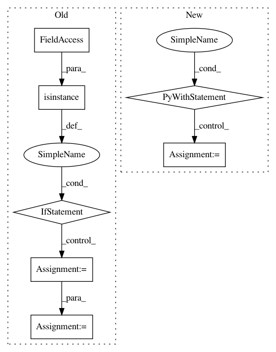

da37438735fd4b845bb0874562bd071865c480bb,texar/modules/encoders/rnn_encoders.py,RNNEncoderBase,__init__,#RNNEncoderBase#Any#Any#Any#,49
Before Change
raise ValueError(
"`vocab_szie` is required if embedding is enabled and "
"`embedding` is not provided")
if isinstance(embedding, tf.Variable):
self._embedding = embedding
else:
self._embedding = embedder_utils.get_embedding(
self._hparams.embedding, embedding, self._vocab_size,
self.variable_scope)
if self._hparams.embedding.trainable:
self._add_trainable_variable(self._embedding)
if self._vocab_size is None:
self._vocab_size = self._embedding.get_shape().as_list()[0]
@staticmethod
def default_hparams():
Returns a dictionary of hyperparameters with default values.
After Change
RNNEncoderBase.__init__(self, hparams)
// Make RNN cells
with tf.variable_scope(self.variable_scope):
if cell_fw is not None:
self._cell_fw = cell_fw
else:
self._cell_fw = layers.get_rnn_cell(self._hparams.rnn_cell_fw)
if cell_bw is not None:
self._cell_bw = cell_bw
elif self.hparams.rnn_cell_share_config:
self._cell_bw = layers.get_rnn_cell(self._hparams.rnn_cell_fw)
else:
self._cell_bw = layers.get_rnn_cell(self._hparams.rnn_cell_bw)
@staticmethod
def default_hparams():
Returns a dictionary of hyperparameters with default values.
In pattern: SUPERPATTERN
Frequency: 3
Non-data size: 7
Instances
Project Name: asyml/texar
Commit Name: da37438735fd4b845bb0874562bd071865c480bb
Time: 2018-03-17
Author: zhitinghu@gmail.com
File Name: texar/modules/encoders/rnn_encoders.py
Class Name: RNNEncoderBase
Method Name: __init__
Project Name: RaRe-Technologies/gensim
Commit Name: 4ea27ba44e2ce56f06c2294d02e59031707e1ca5
Time: 2014-04-19
Author: radimrehurek@seznam.cz
File Name: gensim/matutils.py
Class Name: MmReader
Method Name: __iter__
Project Name: analysiscenter/batchflow
Commit Name: 11c6bf1dbd051d087519ff771b39dac600c0d96d
Time: 2019-07-29
Author: 7520522+a-arefina@users.noreply.github.com
File Name: batchflow/models/tf/encoder_decoder.py
Class Name: EncoderDecoder
Method Name: head